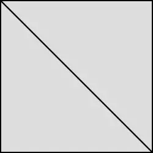

Bonsai in Venezuela

Basic Bonsai Concepts
Bonsai is the traditional art of cultivating live trees in small pots, imitating the shape and harmony of nature's large trees. This is achieved by combining aesthetic design techniques with constant care for the plant.
The word comes from Japanese and means "tree in a tray" or "bowl." The main goal is to make a small tree look like a giant, old specimen growing freely in the countryside.
New branches and shoots are pruned to maintain the desired shape and control the direction of growth. Copper or aluminum wire is wrapped around the branches to bend and guide them with aesthetic precision. The roots are trimmed in a controlled manner to limit the tree's size and encourage finer, new roots.
Essential Care:
Because there is little soil, the water evaporates quickly; you have to water as soon as the substrate starts to dry out.
The soil should drain water very well but retain just enough moisture to oxygenate the roots.
Most bonsai are outdoor trees and need direct sunlight and fresh air to live healthy lives.